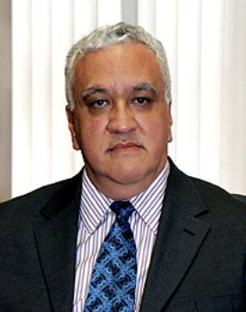

Magistrado Manuel González Oropeza
En el ámbito profesional ha fungido, entre otras posiciones, como Secretario General de la Coordinación de Humanidades de la UNAM; Director del Acervo Histórico Diplomático de la Secretaría de Relaciones Exteriores, Secretario de la Coordinación General de Sistematización y Compilación de Tesis de la H. Suprema Corte de Justicia de la Nación, Presidente del Consejo Electoral del IFE en el Distrito Federal que organizó la primera elección de Jefe de Gobierno en la entidad en 1997. Ha sido profesor en la Universidad Panamericana, Escuela Libre de Derecho, INAP, Montreal, California en Los Ángeles, Houston, Michigan State, Texas en Austin y en diversas Universidades estatales y privadas al interior del país.
En 1990, fue el director fundador del Instituto de Investigaciones Jurídicas de la Universidad de Guadalajara, en 1998 fue Presidente fundador del Consejo Académico del Instituto de Estudios Legislativos del Congreso del Estado de México y en 2004 volvió a presidir el Consejo Académico de dicho Instituto por consenso de las fracciones parlamentarias de dicho Congreso.
Su obra académica y de investigación comprende monografías especializadas sobre Derecho Constitucional, Historia del Derecho y Derecho Comparado, así como los libros Digesto Constitucional Mexicano, La intervención federal en la desaparición de poderes, El Senado de la República, El archivo inédito de Ignacio L. Vallarta, Los diputados ante la Nación, El Federalismo, Secuestrar para Juzgar y Los orígenes jurisdiccionales de la protección de la Constitución y los derechos del hombre, entre otras.
En 1999 fue integrante de la Comisión designada por el Poder Ejecutivo del Estado de Veracruz, para elaborar el anteproyecto de reforma integral de la Constitución de la Entidad, presentando dicho documento en septiembre de 1999, para posteriormente someterse al Constituyente Permanente y expedirse así la reforma integral de la Constitución del Estado el 3 de febrero de 2000. Ha colaborado en la formulación de reformas a las Constituciones de los Estados de Durango, Querétaro y Guerrero.
Desde noviembre de 2006 se desempeña como Magistrado de la Sala Superior del Tribunal Electoral del Poder Judicial de la Federación.